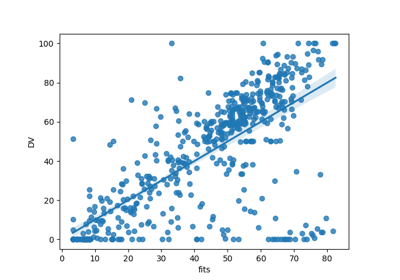
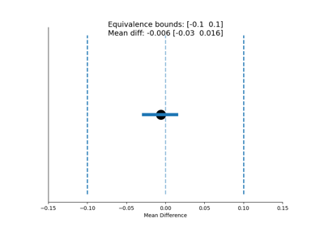

Usage Guide¶
Usage examples:
Note
print() statements in the examples below are only so these docs render at this site. They are not required for actual usage.
Sometimes using pymer4 interactively can cause the Python kernel to crash. This is more likely to happen if you have multiple interactive sessions running simulatenously. One way around this is to put this at the top of your notebook/code:
import os
os.environ['KMP_DUPLICATE_LIB_OK']='True'



